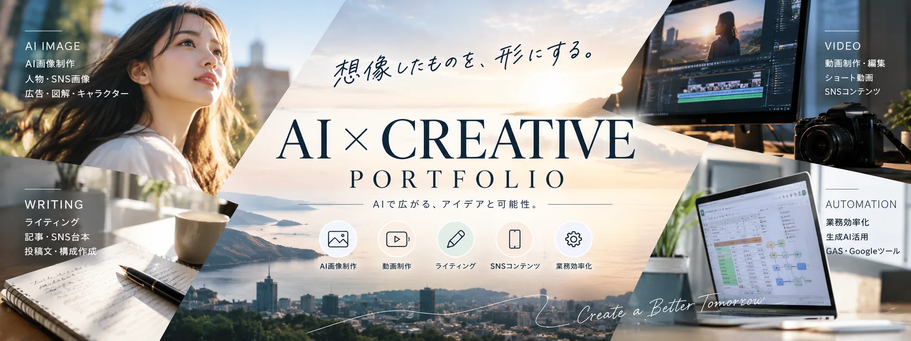
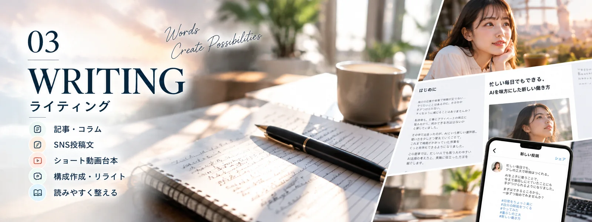
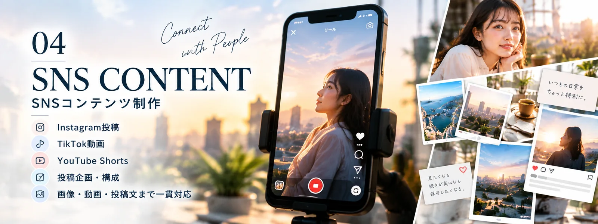
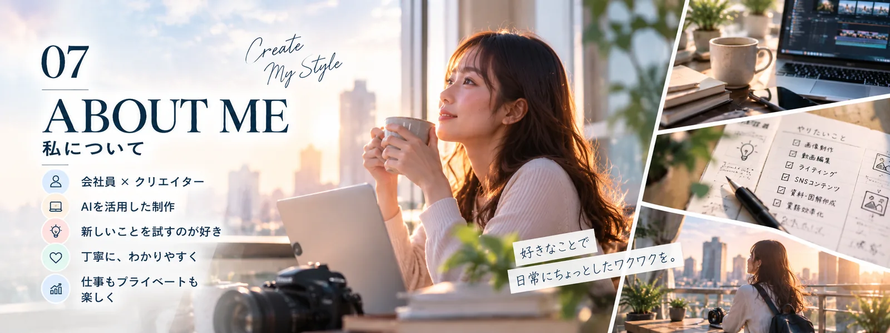
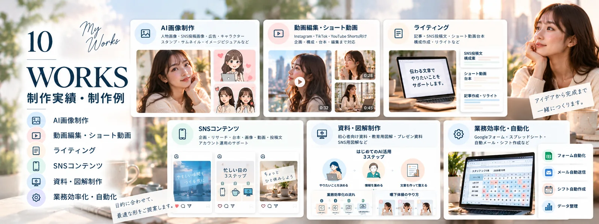

01
AI画像制作
人物画像・SNS画像・サムネイルなど

WHAT I DO
人物画像・SNS画像・サムネイルなど

ショート動画・構成・編集など

記事・投稿文・動画台本など

企画・台本・画像・投稿文など

初心者向け資料・教育用図解など

Googleフォーム・スプレッドシート・GASなど
SERVICE 01
SNS投稿画像、記事サムネイル、人物イメージ、 広告用ビジュアルなどを制作します。 用途や掲載媒体に合わせて、 構図・色味・雰囲気を調整します。
SERVICE 02
Instagramリール、TikTok、YouTubeショートなど、 SNS向けの動画制作・編集に対応します。 視聴者に伝わりやすい構成やテンポを意識し、 目的に合わせた動画に仕上げます。
SERVICE 03
Web記事、ブログ記事、SNS投稿文、動画台本など、 読み手に伝わりやすい文章を制作します。 ターゲットや目的に合わせて構成を考え、 読みやすさと分かりやすさを大切にしています。
SERVICE 04
Instagram・TikTok・YouTubeなどのSNSに向けて、 投稿企画から台本、画像、投稿文まで制作します。 発信する目的やターゲットに合わせて、 分かりやすく伝わるコンテンツを提案します。
SERVICE 05
複雑な情報を整理し、見やすく分かりやすい 資料や図解を制作します。 社内研修、教育資料、プレゼンテーションなど、 利用する場面や対象者に合わせて構成・デザインを調整します。
SERVICE 06
Googleフォーム・スプレッドシート・GAS・n8nなどを 活用し、日々の繰り返し作業を効率化する仕組みを 設計・構築します。 現在の業務を整理し、無理なく運用できる方法を ご提案します。
飲食店の日報管理を想定した Googleフォーム・スプレッドシート連携や、 AI関連ニュースを収集してSlackへ通知する ワークフローなどを制作・検証しています。
業務効率化について相談するABOUT / STRENGTH / PROCESS
会社員として働きながら、AIを活用したクリエイティブ制作に取り組んでいます。実際に作り、試し、改善することを大切にしています。

画像・動画・文章・自動化を組み合わせ、目的に合ったものを形にします。

アイデアを形にする・まず試す・細部まで丁寧に仕上げる。

ご相談 → ヒアリング → 企画・制作 → 確認・調整 → 完成。
SELECTED WORKS

AI画像、動画、SNS、ライティング、図解、業務効率化などの制作例です。掲載画像はコンセプトを伝えるイメージであり、実案件の成果を示すものではありません。
noteの記事を見るCONTACT
画像制作、動画編集、ライティング、SNSコンテンツ、AI活用など、お気軽にご相談ください。
制作について相談する